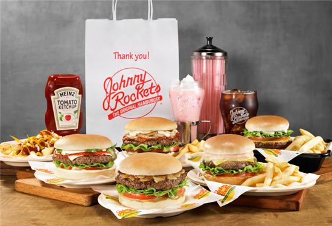

브랜드론칭 2011년 2월
자니로켓은 1986년 오리지널 햄버거(The Original Hamburger)를 슬로건으로 내걸고 미국 로스앤젤레스에 1호점을 오픈 한 이후 현재까지 미국, 유럽, 남미, 중동, 아시아 등 32개 국가에서 400여 개의 점포를 운영 중인 프리미엄 햄버거 레스토랑입니다.
미국의 전통 음식과 문화를 상품화하여 신선하고(Fresh), 즐겁고(Fun), 친근한(Friendly) 서비스를 바탕으로 세월이 흘러도 변하지 않는 자니로켓 만의 브랜드 가치를 쌓아 오면서 미국인들에게 많은 사랑을 받고 있습니다.
자니로켓은 메뉴, 맛, 서비스, 운영체계 등 사업의 모든 핵심 요소들을 매뉴얼화 하고 브랜드 고유의 가치를 지속시키고 계승해 나가는데 있어서 외부의 변수와 타협하지 않는 것으로 정평이 나있습니다.
자니로켓 햄버거는 쇠고기 패티의 풍부한 육즙 그리고 직접 개발한 소스와 신선한 토핑이 어우러져 맛과 품질이 우수한 프리미엄 햄버거 입니다. 오리지널 햄버거와 아메리칸 프라이즈, 샌드위치, 핫도그, 샐러드, 수제 셰이크 등 자니로켓을 대표하는 50여종의 메뉴를 제공합니다.